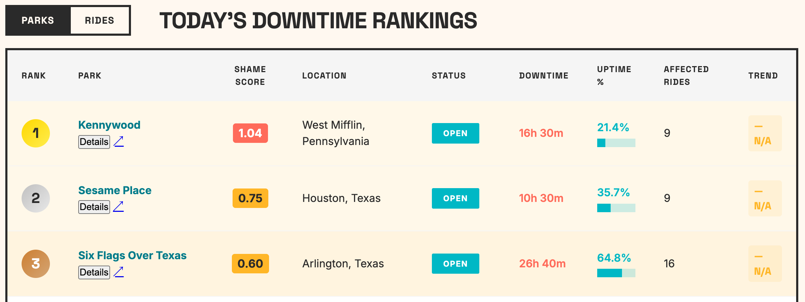

Let's get this out of the way: the name is pure hyperbole. Nobody's clicking on a boring website called "Theme Park Uptime Percentages". I built this site because I got tired of hearing that theme parks "aren't what they used to be" every time a ride has the audacity to break down during someone's vacation. I'm an engineer. Hard numbers are my love language. If we're going to argue about theme park reliability, let's do it with actual data instead of your once-a-year vacation anecdote.
Here's what most people don't appreciate: there's almost nothing harder than keeping an attraction running through a million visitors a year. Engineering something that needs to work flawlessly millions of times annually is orders of magnitude more difficult than everyday engineering challenges. This site is absolutely not an indictment of the people who maintain these parks; they're performing minor miracles daily.
When I went looking for park-to-park comparisons, I came up empty. Plenty of sites will tell you the wait time for a specific ride, but nothing that compares parks and attractions against each other in any meaningful way.
The other perennial debate: which parks have the longest wait times. "Nobody goes there anymore. It's too crowded." Once again, no actual numbers existed to compare parks, so that became the second major feature of this site.
The problem with this little project is fairly judging one park against another is way more difficult than you'd think. If you just add up the ride downtime, that penalizes parks with more rides. If you just go with uptime percentage, you're penalizing parks that have a bunch of complicated rides instead of simple old-fashioned carnival-style rides.
The Shame Score is a normalized metric that measures how much a theme park's downtime hurts guests, accounting for both the amount of downtime and the importance of the rides that went down.
Where:
Every ride is classified into one of three tiers based on guest demand and impact:
| Tier | Weight | Description | Examples |
|---|---|---|---|
| 1 | 3× | Flagship attractions guests plan trips around | Star Wars: Rise of the Resistance, Hagrid's, Velocicoaster |
| 2 | 2× | Major rides with consistent demand | Pirates of the Caribbean, Haunted Mansion |
| 3 | 1× | Standard attractions, lower guest impact | Carousels, smaller flat rides |
Problem: Raw downtime hours unfairly penalize larger parks. A park with 50 rides will naturally have more total downtime than a park with 20 rides. And 1 hour of downtime on Space Mountain hurts more guests than 1 hour on a carousel.
Solution: The Shame Score solves both problems:
Park A (small park): 1 Tier 1 ride down for 2 hours = 6 weighted hours. Total park weight = 15. Shame Score = (6 ÷ 15) × 10 = 4.0
Park B (large park): 3 Tier 3 rides down for 2 hours each = 6 weighted hours. Total park weight = 45. Shame Score = (6 ÷ 45) × 10 = 1.3
Park A has a higher shame score because losing a flagship ride hurts more than losing three minor rides, even though total downtime hours were the same.
| Score Range | Interpretation |
|---|---|
| 0.0 – 1.0 | Excellent reliability |
| 1.0 – 3.0 | Good performance |
| 3.0 – 5.0 | Average |
| 5.0 – 10.0 | Below average |
| > 10.0 | Poor reliability |
Higher score = More shame = Worse performance (0-10+ scale)
Here's what the downtime rankings look like:
All live wait time and ride status data is powered by ThemeParks.wiki, an open-source API that aggregates real-time data from 50+ theme parks worldwide.
ThemeParks.wiki provides live data including:
The project is open-source under the Apache-2.0 license. You can view the source code on GitHub.
We collect snapshots every 5 minutes when parks are open, then aggregate this data to calculate downtime statistics and wait time trends over time.
Found something wrong? We want to hear about it. Seriously. Whether it's a ride listed under the wrong park, a tier classification you disagree with, broken charts, or data that looks suspicious. We'd rather know than let it fester.
This site runs on obsessive attention to detail, and we can't catch everything ourselves. If something's off, drop us a line at feedback@themeparkhallofshame.com and we'll get it sorted.